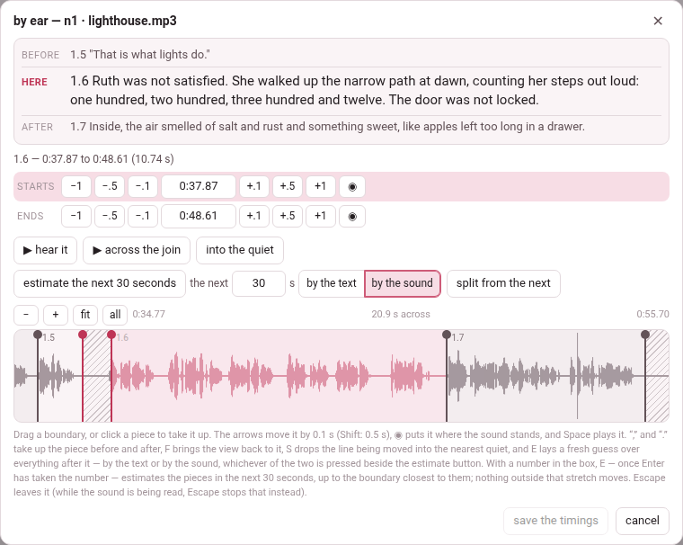

Fixing the timings
An alignment, or a first guess, times a whole recording at once, and some of what it does will drift: a subparagraph that starts a word late, one that swallows the breath before the next. Two tools put that right, and both save through the same door, so a time moved in one and a time moved in the other are written, merged and rebuilt by the same code, and both count as fixed by hand — which a later align keeps unless told to start over.
1. Edit times: one subparagraph at a time#
edit times in the header (or edit times by hand in the narration panel) turns the reader into a timing editor. The narration’s own player appears as a third row of the header — play it, seek in it — and every subparagraph shows, under its label:
- ▶, which plays it, and its length in seconds;
- a start row and an end row, each: −1 −.5 −.1, the time itself in a box, +.1 +.5 +1, and ◉, which sets it to where the player’s playhead is now;
- undo, which puts that subparagraph’s times back as they were.
How it behaves, and why:
- You hear every move.
- Moving a start plays the first second and a half of the subparagraph; moving an end plays its last second and a half. That is how you hear whether you have put it right.
- An end moves the next start with it.
- Setting a subparagraph’s end moves the next one’s start to meet it, so the narration has no gap. They stay two numbers, so either can be pulled apart again afterwards. Never across two recordings: the next start is then a time in another file.
- A subparagraph with no time yet
- is timed by typing its start and its end into the boxes; the steps and ◉ move a time that is already there, and do nothing on one that has never had one.
- ◉ stamps the file that is playing.
- In a book of several recordings, a subparagraph in another recording says that subparagraph is in another recording — play it first.
The changes are kept in this browser, and survive a reload, until you save them. save times (N) — N counts every subparagraph changed, the next one’s start moved by an end included — writes them into timings.json and into the chapter files, and says saved N to timings.json and the .tex. discard edits throws them away: it asks discard N? and a second click within four seconds does it. If the save fails the edits stay in the browser, and the message says why.
On opening, a reader whose timings.json holds newer times than the page was built with takes them (N timings loaded from timings.json).
2. By ear: boundary by boundary#
by ear, on a recording’s row in the narration panel, opens the boundaries of that recording over a picture of its sound — a waveform, with every boundary on it as a line you can drag. It answers a different question from align: not where is each subparagraph, for the whole recording at once, but where does this one stop and the next begin, for the one boundary that came out wrong.

The sheet, from the top:
- before, here, after — the text of the subparagraph being timed and its two neighbours, so you can see what you are placing;
- the times of the one in hand, and its starts and ends rows — the same six steps as edit times, the time in a box (type one and press Enter), and ◉, put it where the sound stands now;
- ▶ hear it plays it, from its start to where the next begins; ▶ across the join plays the second before the boundary and the second after it;
- into the quiet (S) moves the line into the middle of the nearest stretch where the sound drops away — the gap between two words, which is where a boundary belongs. How far it looks depends on how far you are zoomed in, and a gap shorter than a breath is passed over;
- estimate the rest (E) lays a fresh guess over everything after the line in hand, each piece given a slice of what is left in proportion to how much text it has. Nothing to the left of the line is touched — that is the point of it: a hand works left to right, and by the time the tenth boundary is right, the fortieth still carries the first guess’s error;
- split from the next / join to the next (below);
- the zoom: − and + show more or less of the recording, fit goes back to the piece in hand and its neighbours, all shows the whole file; the wheel scrolls, and the wheel with Shift or Ctrl zooms;
- the waveform, the piece in hand in colour, the others grey.
A boundary is one act. The end of one subparagraph and the start of the next are two numbers in the file, but they are one moment in the recording, so dragging the line moves both together. Two numbers that should agree are two chances to be wrong.
Unless you want them apart. Some recordings really do pause — a heading read, a breath, then the text. split from the next pulls the two lines apart and shades the silence between them as said by neither; join to the next puts them together again. An alignment snaps to the silences, so after one the boundaries often arrive split.
The keys#
The same few movements, over and over, so they are all under the hand:
| Key | Does |
|---|---|
| , and . | take up the piece before and the piece after (so do [ ] and PageUp PageDown) |
| F | bring the view back onto the piece in hand |
| S | drop the line into the nearest quiet |
| E | estimate everything after it afresh |
| ← → (or ↓ ↑) | nudge by a tenth of a second; with Shift, half a second |
| Space | play the piece, or stop |
| Enter | save the timings |
| Esc | leave without saving |
The comma and the full stop lead because they are unshifted on every keyboard, where the brackets sit behind AltGr on an Italian or a French one. None of the keys fires while you are typing a time into a box, and Ctrl+F is left to the browser.
save the timings writes what moved (saved N timings); cancel, ✕ or Esc leave without saving. The reader takes the new times at once — N boundaries moved and saved.
The picture of the sound is drawn by the server from the recording (with ffmpeg). Where there is none, into the quiet says there is no picture of the sound here to find the quiet in and does nothing else; the rest of the sheet still works.